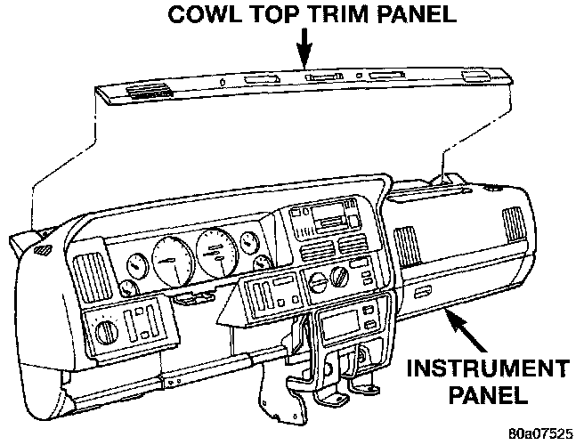

Instrument Panel Cowl Top Trim Panel
REMOVALWARNING: ON VEHICLES EQUIPPED WITH AIRBAGS, REFER TO AIR BAGS AND SEAT BELTS/AIR BAGS BEFORE ATTEMPTING ANY STEERING WHEEL, STEERING COLUMN, OR INSTRUMENT PANEL COMPONENT DIAGNOSIS OR SERVICE. FAILURE TO TAKE THE PROPER PRECAUTIONS COULD RESULT IN ACCIDENTAL AIRBAG DEPLOYMENT AND POSSIBLE PERSONAL INJURY.
1. Disconnect and isolate the battery negative cable.
Cowl Top Trim Remove/Install:

2. Using a wide flat-bladed tool such as a trim stick, gently pry the cowl top trim panel off of the instrument panel top pad.
3. Pull the panel up far enough to unplug the wire harness connector for the solar sensor, or to remove the solar sensor from the cowl top trim, if the vehicle is so equipped.
4. Remove the cowl top trim panel from the vehicle.
5. Reverse the removal procedures to install.